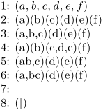
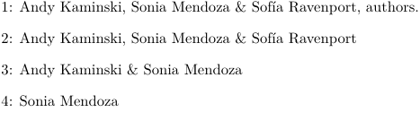

< Prev: Action Processing | Top: System Macros | Next: Key-Value Assignments >
We've already seen some macros that take care of comma separated lists. Such list can be processed with
\processcommalist[string,string,...]\commando
The user supplied command \commando receives one argument: the string. This command permits nesting and spaces after commas are skipped. Empty sets are no problem.
Empty arguments are not processed. Empty items (,,) however are treated.
-
\def\dosomething#1{(#1)} 1: \processcommalist [\hbox{$a,b,c,d,e,f$}] \dosomething \par 2: \processcommalist [{a,b,c,d,e,f}] \dosomething \par 3: \processcommalist [{a,b,c},d,e,f] \dosomething \par 4: \processcommalist [a,b,{c,d,e},f] \dosomething \par 5: \processcommalist [a{b,c},d,e,f] \dosomething \par 6: \processcommalist [{a,b}c,d,e,f] \dosomething \par 7: \processcommalist [] \dosomething \par 8: \processcommalist [{[}] \dosomething \par
And here is the result:
- 
Quitting a commalist halfway can be done by using \quitcommalist within the execution macro.
When a list is saved in a macro, we can use a construction like:
\expandafter\processcommalist\expandafter[\list]\dosomething
Such solutions suit most situations, but we wanted a bit more.
\processcommacommand[string,\stringset,string]\dosomething
where \stringset is a predefined set, like:
\def\first{zeroeth,first} \def\second{last} \processcommacommand[\first]\message \processcommacommand[\first,second,third]\message \processcommacommand[\first,between,\second]\message
Commands that are part of the list are expanded, so the use of this macro has its limititations.
The argument to \dosomething is not delimited. Because we often use [] as delimiters, we also have:
\processcommalistwithparameters[string,string,...]\dosomething
where \dosomething looks like:
\def\dosomething[#1]{... #1 ...}
Some of the commands mentioned earlier are effective but slow. When one is desperately in need of faster alternatives and when the conditions are predictable safe, the \raw alternatives come into focus. A major drawback is that they do not take \c!constants into account, simply because no expansion is done. (This is not a problem for \rawprocesscommalist), because this macro does not compare anything. Expandable macros are permitted as search string for \rawdoifinsetelse.
\rawdoifinsetelse{string}{string,...}{...}{...} \rawprocesscommalist[string,string,...]\commando \rawprocessaction[x][a=>\a,b=>\b,c=>\c]
Spaces embedded in the list, for instance after commas, spoil the search process. The gain in speed depends on the length of the argument (the longer the argument, the less gain).
When we process the list a,b,c,d,e, the raw routine takes over 30% less time, when we feed 20+ character strings we gain about 20%.
It's possible to get an element from a commalist or a command representing a commalist.
\getfromcommalist [string] [n] \getfromcommacommand [string,\strings,string,...] [n]
The difference between the two of them is the same as the difference between \processcomma.... The found string is stored in \commalistelement.
Because 0, 1 and 2 are often asked for, the macros are optimized on those numbers.
We can calculate the size of a comma separated list by using:
\getcommalistsize [string,string,...] \getcommacommandsize [string,\strings,string,...]
Afterwards, the length is available in the macro \commalistsize (not a <counter>).
Watertight (and efficient) solutions are hard to find, due to the handling of braces during parameters passing and scanning. Nevertheless, the macros function quite well.
For low level (fast) purposes, we can also use the next alternative, which can handle up to 8 elements at most.
\dogetcommalistelement1\from a,b,c\to\commalistelement
It's ugly, but it is very fast indeed. Keep in mind that this version does not strip leading spaces from the list items.
If you need to present a comma separated list of values (like an author list, for example) in a single line, with the option of changing the separator of the items and have a distinct separator for the last item of the list, you can use \commalistsentence.
\commalistsentence[a,b,c] \commalistsentence[a,b,c][{ \& },{ and }] \commalistsentence[a,b,c][+,-]
More complex use of \processcommacommand, based on an example provided by Hans in the mailing list:
-
\starttexdefinition AuthorFullName #1 \edef\currentauthor{#1}% \doifsomething {\authorparameter{first}} { \authorparameter{first} \space } \doifsomething {\authorparameter{last}} { \authorparameter{last} } \stoptexdefinition \starttexdefinition AuthorListIndeed #1 \advance\scratchcountertwo\plusone \ifnum\scratchcountertwo=\plusone % nothing \orelse\ifnum\scratchcountertwo=\scratchcounterone \space\letterampersand\space \else ,\space \fi \AuthorFullName{#1}% \stoptexdefinition \starttexdefinition AuthorList #1 \getcommacommandsize[#1]% \scratchcounterone\commalistsize \scratchcountertwo\zerocount \processcommacommand[#1]\AuthorListIndeed \stoptexdefinition %%%%%%%%%%%%%%%%%%%%%%%%%%%%%%%%%%%%%%%%%%%%% \definenamespace[authors][ type=module, name=author, command=yes, parent=authors, ] % Role for each author. Call it with \authorparameter{role} \defineauthor[authors][role={author}] % Each author inherits the common setting \defineauthor[andi][authors][first={Andy}, last={Kaminski}] \defineauthor[soni][authors][first={Sonia}, last={Mendoza}] \defineauthor[sofi][authors][first={Sofía}, last={Ravenport}] % This role is different from the one for each author \startdocument[authors={andi,soni,sofi},role={authors}] 1: \AuthorList{\documentvariable{authors}}, \documentvariable{role}. \blank 2: \AuthorList{andi,soni,sofi} \blank 3: \AuthorList{andi,soni} \blank 4: \AuthorList{soni} \blank \stopdocument
- 
< Prev: Action Processing | Top: System Macros | Next: Key-Value Assignments >